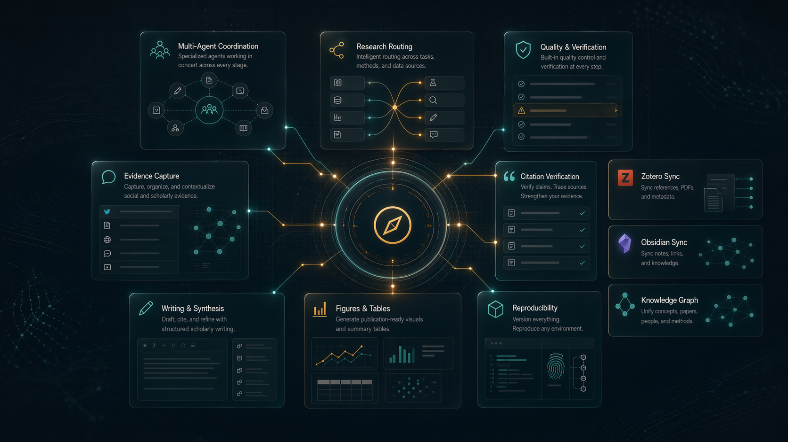
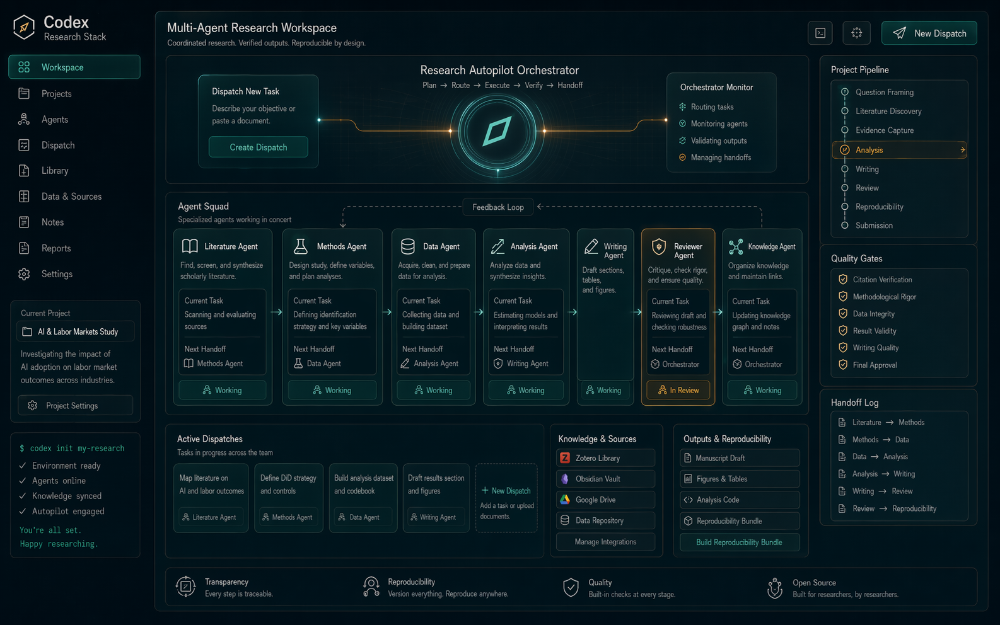
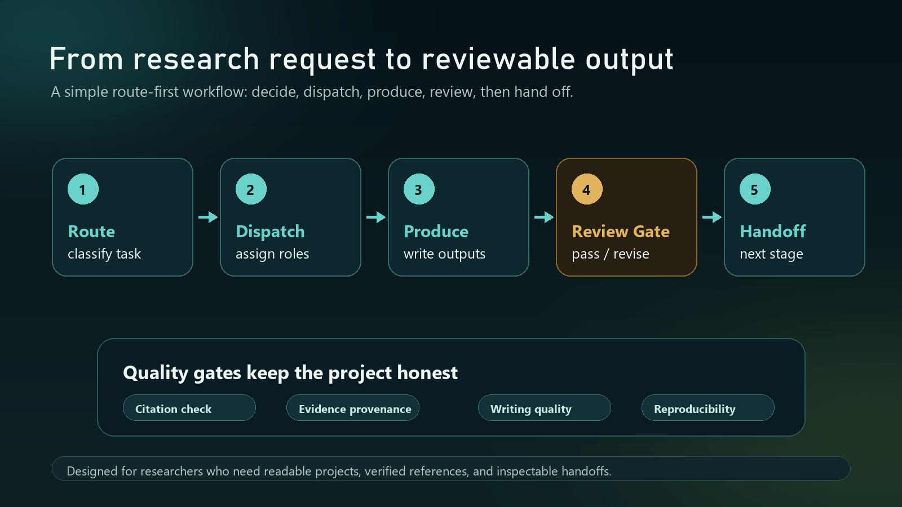

你可以把它理解成四层
- 任务判断：`research-autopilot` 先说明这是什么工作，建议怎么开始。
- 项目协作：`research-team-orchestrator` 把较大的任务变成分工、审查和交接。
- 检查点：引文、写作质量、阶段推进和复现会在这里被检查。
- 材料沉淀：核验过的材料会进入 Zotero、Obsidian 和项目文件。
如果你已经知道这个仓库大概能做什么，这页会用更直白的方式解释： 它怎么判断任务、怎么组织项目协作、怎么用检查点拦住问题， 以及最后怎么把可靠材料放到正确的位置。

因为很多系统把“换几个角色名继续回答”也叫多智能体。这里不是。 只有分工、输出、审查和日志都分开时，它才算真实多智能体运行。 这样做的好处不是更炫，而是以后还能回看。


这些文件的作用很实际：如果一个项目运行到一半出问题，你不用靠回忆猜， 而是可以直接看到它停在了哪一步、前面发生过什么。